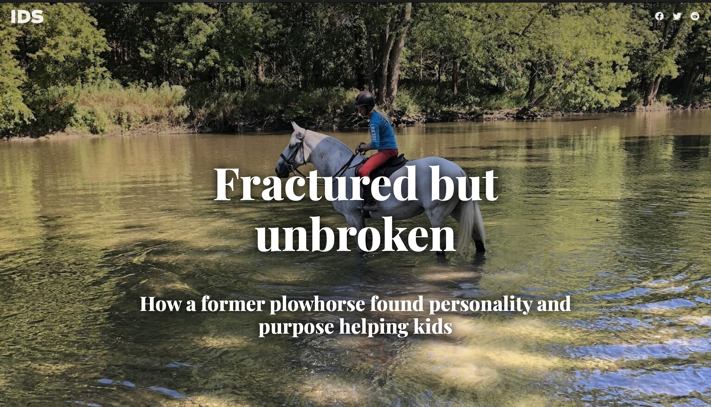
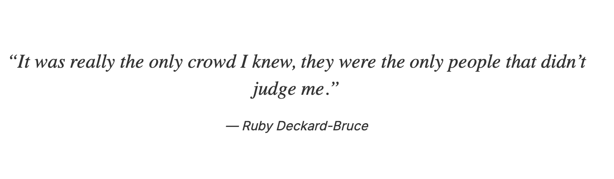
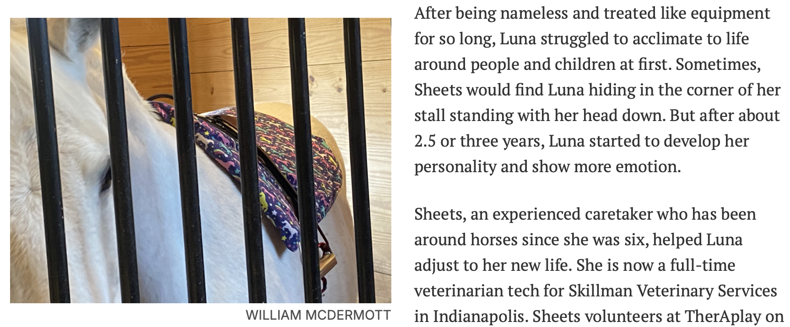

Designing for the transition
from print to digital.
As the Indiana Daily Student increasingly relied on digital publishing, the challenge wasn’t simply putting journalism online. I co-designed and co-developed two interactive editorial experiences that made long-form stories engaging and intuitive on a screen, including for readers accustomed to the print newspaper.
The website had to carry more of the reading experience.
With the print newspaper being discontinued, we needed to create digital experiences that felt just as engaging, intuitive, and trustworthy for readers. I was working within the publication’s existing technical system, so the goal wasn’t to redesign everything. It was to make each story work better for the web.
Same publication. Two very different stories.

Fractured but Unbroken
Luna’s story
A former plowhorse becomes a therapy horse helping children at Children’s TherAplay.
The Design QuestionHow can the digital experience create space for a visual, emotional story without overwhelming the reader?
See the story live
“Everybody Deserves to Get Clean”
A journey through addiction and recovery
A long-form story following one Bloomington woman’s journey through addiction and recovery.
The Design QuestionHow can the experience guide a reader through a complex, deeply personal narrative while maintaining a clear reading flow?
See the story liveKey choices that shaped the reading experience.

Pull quotes
Used intentional placement and alignment to break up longer sections and highlight key moments.
Image treatment
Adjusted the size and placement of photographs based on their role in the narrative, from full bleed to inline.

Text flow
Alternated text, imagery and quotes to create natural breaks and keep readers engaged as they scrolled.
The same system doesn’t need to create the same experience.
Both stories lived within the same publication framework, but the content needed different treatment. I learned to adapt the layout, pacing, and visual approach around the story being told, rather than forcing every story into the same format.
Co-designed + co-developed.
Worked with editors and designers to translate stories to digital.
Designed the reading experience from scroll flow to image placement and pacing.
Built with HTML, CSS and JavaScript inside the existing system.